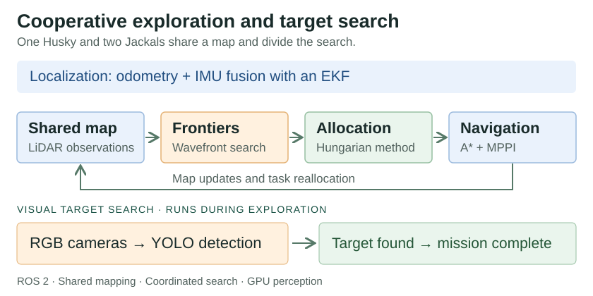

Featured / Multi-robot autonomy
Cooperative exploration and target search
Cooperative exploration and object search with a Husky and two Jackals, integrating probabilistic localization, frontier-based task allocation, and visual perception.
View project ↗